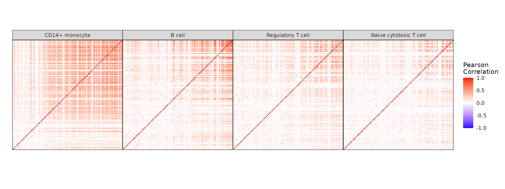
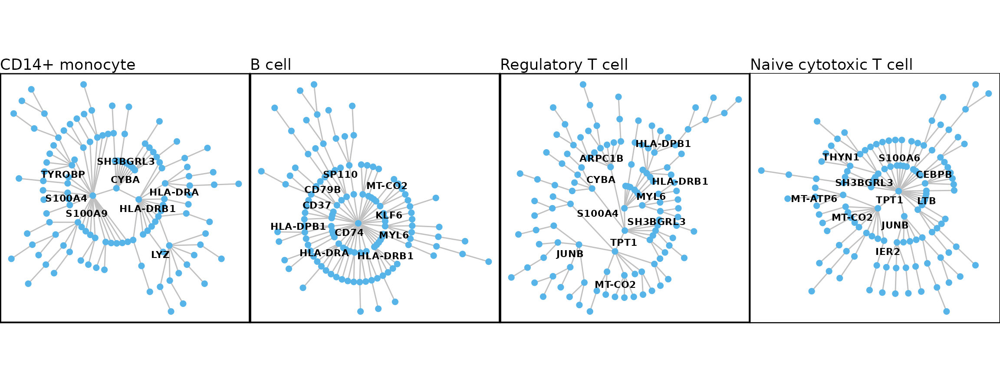

Compare gaussian copula and vine copula
Dongyuan Song
Bioinformatics IDP, University of California, Los Angelesdongyuansong@ucla.edu
Qingyang Wang
Department of Statistics, University of California, Los Angelesqw802@g.ucla.edu
15 July 2023
Source:../../scDesign3/code/vignettes/scDesign3-copulaCompare-vignette.Rmd
scDesign3-copulaCompare-vignette.Rmd
library(scDesign3)
library(DuoClustering2018)
library(scater)
library(tidygraph)
library(ggrepel)
library(scran)
library(dplyr)
library(igraph)
library(tidyverse)
library(rvinecopulib)
theme_set(theme_bw())Introduction
In this tutorial, we will show the differences between using Gaussian copula and vine copula when simulate new data. Vine copula can better estimate the high-dimensional gene-gene correlation, however, the simulation with vine copula does takes more time than with Gaussian copula. If your reference dataset have more than 1000 genes, we recommend you simulate data with Gaussian copula.
Read in the reference data
The raw data is from the R package DuoClustering2018.
rownames(Zhengmix4eq_sce) <- rowData(Zhengmix4eq_sce)$symbol
colData(Zhengmix4eq_sce)$cell_type <- colData(Zhengmix4eq_sce)$phenoidFor demonstration purpose, we use the Zhengmix4eq dataset in the package with top 100 highly variable genes. We further filtered out some highly expressed housekeeping genes and added TF genes.
humantfs <- read_csv("http://humantfs.ccbr.utoronto.ca/download/v_1.01/TF_names_v_1.01.txt", col_names = FALSE)
stats <- modelGeneVar(Zhengmix4eq_sce)
chosen <- getTopHVGs(stats, n = 100)
### Filter out some HKGs.
chosen <- union(chosen, humantfs$X1)
chosen <- chosen[!stringr::str_starts(chosen, "RP")]
chosen <- chosen[!stringr::str_starts(chosen, "TMSB")]
chosen <- chosen[!chosen %in% c("B2M", "MALAT1", "ACTB", "ACTG1", "GAPDH", "FTL", "FTH1")]
Zhengmix4eq_sce_sub <- Zhengmix4eq_sce[rownames(Zhengmix4eq_sce) %in% chosen, ]
print(Zhengmix4eq_sce_sub)
#> class: SingleCellExperiment
#> dim: 119 3555
#> metadata(1): log.exprs.offset
#> assays(3): counts logcounts normcounts
#> rownames(119): TPT1 CD74 ... PHF1 IRF7
#> rowData names(10): id symbol ... total_counts log10_total_counts
#> colnames(3555): b.cells6276 b.cells6144 ... regulatory.t1084
#> regulatory.t9696
#> colData names(16): dataset barcode ... sizeFactor cell_type
#> reducedDimNames(2): PCA TSNE
#> mainExpName: NULL
#> altExpNames(0):Simulation
We then use scdesign3 to simulate two new datasets using Gaussian copula and vine copula respectively.
set.seed(123)
Zhengmix4eq_simu_sce_gaussian <- scdesign3(sce = Zhengmix4eq_sce_sub,
celltype = 'cell_type',
pseudotime = NULL,
spatial = NULL,
other_covariates = NULL,
corr_formula = "cell_type",
mu_formula = "cell_type",
sigma_formula = "cell_type",
n_cores = 2,
copula = "gaussian",
assay_use = "normcounts",
family_use = "nb",
pseudo_obs = TRUE, return_model = TRUE)
set.seed(123)
Zhengmix4eq_simu_sce_vine <- scdesign3(sce = Zhengmix4eq_sce_sub,
celltype = 'cell_type',
pseudotime = NULL,
spatial = NULL,
other_covariates = NULL,
corr_formula = "cell_type",
mu_formula = "cell_type",
sigma_formula = "cell_type",
n_cores = 2,
copula = "vine",
assay_use = "normcounts",
family_use = "nb",
pseudo_obs = TRUE, return_model = TRUE)Visualization
For the simulation result using Gaussian copula, the return object contains a corr_list which is the gene-gene correlation matrices for each group that user specified, in this case, the groups are cell types. For the simulation result using vine copula, the corr_list gives the vine structure for each group that user specified, in this case, the groups are cell types. We then reformat the two corr_list and visualize them.
We first visualize the corr_list returned when we use Gaussian copula.
Zhengmix4eq_corr_list <- Zhengmix4eq_simu_sce_gaussian$corr_list
names(Zhengmix4eq_corr_list) <- c("b.cells", "naive.cytotoxic", "cd14.monocytes", "regulatory.t")
heatmap_order <- order(rowData(Zhengmix4eq_sce_sub)$mean_counts)
Zhengmix4eq_corr_list <- lapply(Zhengmix4eq_corr_list, function(x) {
x <- x[heatmap_order, heatmap_order]
x
})
cor_melted <- lapply(Zhengmix4eq_corr_list, reshape2::melt)
cor_dat <- Reduce(rbind, cor_melted)
cor_dat$Method <- Reduce(c, lapply(c("b.cells", "naive.cytotoxic", "cd14.monocytes", "regulatory.t"), function(x){
rep(x, nrow(cor_melted[[x]]))
}))
cor_dat$Method <- factor(cor_dat$Method, levels = c("cd14.monocytes", "b.cells","regulatory.t", "naive.cytotoxic"))
cor_dat <- cor_dat %>% dplyr::mutate(Method = if_else(Method == "b.cells", "B cell", if_else(Method == "cd14.monocytes", "CD14+ monocyte", if_else(Method == "regulatory.t", "Regulatory T cell", "Naive cytotoxic T cell")))) %>% dplyr::mutate(Method = factor(Method, levels = c("CD14+ monocyte", "B cell", "Regulatory T cell", "Naive cytotoxic T cell")))
corr_p <- cor_dat %>% ggplot(
aes(Var2, Var1, fill = value))+
facet_wrap(~Method, nrow = 1) + #, labeller = label_parsed
geom_tile() +
scale_fill_gradient2(low = "blue", high = "red", mid = "white",
midpoint = 0, limit = c(-1, 1), space = "Lab",
name="Pearson\nCorrelation") +
theme(panel.spacing.x=unit(0, "lines"),panel.spacing.y=unit(1, "lines"),
legend.position = "right",
panel.border = element_rect(colour = "black", fill=NA, size=0.5),
axis.text.x = element_blank(),
axis.ticks.x = element_blank(),
axis.text.y = element_blank(),
axis.ticks.y = element_blank())+
xlab("") + ylab("") + coord_fixed()
corr_p
vine_list <- Zhengmix4eq_simu_sce_vine$corr_list
plt1 <- plot(vine_list[[3]], tree = 1, var_names = "use")+ theme(aspect.ratio = 1, title = element_blank())
plt2 <- plot(vine_list[[1]], tree = 1, var_names = "use")+ theme(aspect.ratio = 1, title = element_blank())
plt3 <- plot(vine_list[[4]], tree = 1, var_names = "use")+ theme(aspect.ratio = 1, title = element_blank())
plt4 <- plot(vine_list[[2]], tree = 1, var_names = "use")+ theme(aspect.ratio = 1, title = element_blank())
degree_thresh <- 3
igr_obj1 <- get("g", plt1$plot_env)[[1]]
p1 <- ggraph::ggraph(igr_obj1, "igraph",
algorithm = "tree", circular = TRUE
) + ggraph::geom_edge_link(colour = "#C0C0C0")+
ggraph::geom_node_point(col = "#56B4E9", size = 2) +
ggplot2::theme_void()+ ggraph::geom_node_text(ggplot2::aes(filter = igraph::degree(igr_obj1) > degree_thresh, label = name),
fontface = "bold",
repel = TRUE, check_overlap = TRUE, size = 3
)+ theme(aspect.ratio = 1,
panel.background = element_blank(),
panel.grid.major = element_blank(),
panel.grid.minor = element_blank(),
axis.line = element_line(colour = "black"),
panel.border = element_rect(colour = "black", fill=NA, size=1))
igr_obj2 <- get("g", plt2$plot_env)[[1]]
p2 <- ggraph::ggraph(igr_obj2, "igraph",
algorithm = "tree", circular = TRUE
) + ggraph::geom_edge_link(colour = "#C0C0C0")+
ggraph::geom_node_point(col = "#56B4E9", size = 2) +
ggplot2::theme_void()+ ggraph::geom_node_text(ggplot2::aes(filter = igraph::degree(igr_obj2) > degree_thresh, label = name),
fontface = "bold",
repel = TRUE, check_overlap = TRUE, size = 3
)+ theme(aspect.ratio = 1,
panel.background = element_blank(),
panel.grid.major = element_blank(),
panel.grid.minor = element_blank(),
axis.line = element_line(colour = "black"),
panel.border = element_rect(colour = "black", fill=NA, size=1))
igr_obj3 <- get("g", plt3$plot_env)[[1]]
p3 <- ggraph::ggraph(igr_obj3, "igraph",
algorithm = "tree", circular = TRUE
) + ggraph::geom_edge_link(colour = "#C0C0C0")+
ggraph::geom_node_point(col = "#56B4E9", size = 2) +
ggplot2::theme_void()+ ggraph::geom_node_text(ggplot2::aes(filter = igraph::degree(igr_obj3) > degree_thresh, label = name),
fontface = "bold",
repel = TRUE, check_overlap = TRUE, size = 3
)+ theme(aspect.ratio = 1,
panel.background = element_blank(),
panel.grid.major = element_blank(),
panel.grid.minor = element_blank(),
axis.line = element_line(colour = "black"),
panel.border = element_rect(colour = "black", fill=NA, size=1))
igr_obj4 <- get("g", plt4$plot_env)[[1]]
p4 <- ggraph::ggraph(igr_obj4, "igraph",
algorithm = "tree", circular = TRUE
) + ggraph::geom_edge_link(colour = "#C0C0C0")+
ggraph::geom_node_point(col = "#56B4E9", size = 2) +
ggplot2::theme_void()+ ggraph::geom_node_text(ggplot2::aes(filter = igraph::degree(igr_obj4) > degree_thresh, label = name),
fontface = "bold",
repel = TRUE, check_overlap = TRUE, size = 3
) + theme(aspect.ratio = 1,
panel.background = element_blank(),
panel.grid.major = element_blank(),
panel.grid.minor = element_blank(),
axis.line = element_line(colour = "black"),
panel.border = element_rect(colour = "black", fill=NA, size=0.5))
vine_dat <- list(igr_obj1, igr_obj2, igr_obj3, igr_obj4)We then visualize the corr_list returned when we use vine copula. Comparing with the visualization above, the plots below give more direct visualization about which genes are connected in the vine structure and show gene networks.
p_vine <- cowplot::plot_grid(p1 + ggtitle("CD14+ monocyte"), p2 + ggtitle("B cell"), p3 + ggtitle("Regulatory T cell"), p4 + ggtitle("Naive cytotoxic T cell"), nrow = 1, align = "hv")
p_vine
Session information
sessionInfo()
#> R version 4.3.0 (2023-04-21)
#> Platform: x86_64-pc-linux-gnu (64-bit)
#> Running under: Ubuntu 20.04.6 LTS
#>
#> Matrix products: default
#> BLAS: /usr/lib/x86_64-linux-gnu/openblas-pthread/libblas.so.3
#> LAPACK: /usr/lib/x86_64-linux-gnu/openblas-pthread/liblapack.so.3; LAPACK version 3.9.0
#>
#> locale:
#> [1] LC_CTYPE=en_US.UTF-8 LC_NUMERIC=C
#> [3] LC_TIME=en_US.UTF-8 LC_COLLATE=en_US.UTF-8
#> [5] LC_MONETARY=en_US.UTF-8 LC_MESSAGES=en_US.UTF-8
#> [7] LC_PAPER=en_US.UTF-8 LC_NAME=C
#> [9] LC_ADDRESS=C LC_TELEPHONE=C
#> [11] LC_MEASUREMENT=en_US.UTF-8 LC_IDENTIFICATION=C
#>
#> time zone: America/Los_Angeles
#> tzcode source: system (glibc)
#>
#> attached base packages:
#> [1] stats4 stats graphics grDevices utils datasets methods
#> [8] base
#>
#> other attached packages:
#> [1] rvinecopulib_0.6.3.1.1 lubridate_1.9.2
#> [3] forcats_1.0.0 stringr_1.5.0
#> [5] purrr_1.0.1 readr_2.1.4
#> [7] tidyr_1.3.0 tibble_3.2.1
#> [9] tidyverse_2.0.0 igraph_1.5.0
#> [11] dplyr_1.1.2 scran_1.28.1
#> [13] ggrepel_0.9.3 tidygraph_1.2.3
#> [15] scater_1.28.0 ggplot2_3.4.2
#> [17] scuttle_1.10.1 SingleCellExperiment_1.22.0
#> [19] SummarizedExperiment_1.30.2 Biobase_2.60.0
#> [21] GenomicRanges_1.52.0 GenomeInfoDb_1.36.1
#> [23] IRanges_2.34.1 S4Vectors_0.38.1
#> [25] BiocGenerics_0.46.0 MatrixGenerics_1.12.2
#> [27] matrixStats_1.0.0 DuoClustering2018_1.18.0
#> [29] scDesign3_0.99.5 BiocStyle_2.28.0
#>
#> loaded via a namespace (and not attached):
#> [1] splines_4.3.0 later_1.3.1
#> [3] bitops_1.0-7 filelock_1.0.2
#> [5] polyclip_1.10-4 gamlss.data_6.0-2
#> [7] lifecycle_1.0.3 edgeR_3.42.4
#> [9] rprojroot_2.0.3 lattice_0.21-8
#> [11] vroom_1.6.3 MASS_7.3-60
#> [13] magrittr_2.0.3 limma_3.56.2
#> [15] sass_0.4.6 rmarkdown_2.23
#> [17] jquerylib_0.1.4 yaml_2.3.7
#> [19] metapod_1.8.0 httpuv_1.6.11
#> [21] cowplot_1.1.1 DBI_1.1.3
#> [23] zlibbioc_1.46.0 ggraph_2.1.0
#> [25] kde1d_1.0.5 RCurl_1.98-1.12
#> [27] tweenr_2.0.2 rappdirs_0.3.3
#> [29] GenomeInfoDbData_1.2.10 irlba_2.3.5.1
#> [31] dqrng_0.3.0 pkgdown_2.0.7
#> [33] DelayedMatrixStats_1.22.1 codetools_0.2-19
#> [35] DelayedArray_0.26.6 ggforce_0.4.1
#> [37] tidyselect_1.2.0 farver_2.1.1
#> [39] randtoolbox_2.0.4 ScaledMatrix_1.8.1
#> [41] viridis_0.6.3 BiocFileCache_2.8.0
#> [43] jsonlite_1.8.7 BiocNeighbors_1.18.0
#> [45] ellipsis_0.3.2 survival_3.5-5
#> [47] systemfonts_1.0.4 tools_4.3.0
#> [49] ragg_1.2.5 Rcpp_1.0.11
#> [51] glue_1.6.2 gridExtra_2.3
#> [53] xfun_0.39 mgcv_1.8-42
#> [55] ggthemes_4.2.4 withr_2.5.0
#> [57] BiocManager_1.30.21 fastmap_1.1.1
#> [59] bluster_1.10.0 fansi_1.0.4
#> [61] digest_0.6.33 rsvd_1.0.5
#> [63] gamlss_5.4-12 timechange_0.2.0
#> [65] R6_2.5.1 mime_0.12
#> [67] textshaping_0.3.6 colorspace_2.1-0
#> [69] RSQLite_2.3.1 utf8_1.2.3
#> [71] generics_0.1.3 graphlayouts_1.0.0
#> [73] httr_1.4.6 S4Arrays_1.0.4
#> [75] rngWELL_0.10-9 pkgconfig_2.0.3
#> [77] gtable_0.3.3 blob_1.2.4
#> [79] XVector_0.40.0 htmltools_0.5.5
#> [81] bookdown_0.34 scales_1.2.1
#> [83] png_0.1-8 knitr_1.43
#> [85] tzdb_0.4.0 reshape2_1.4.4
#> [87] nlme_3.1-162 curl_5.0.1
#> [89] cachem_1.0.8 BiocVersion_3.17.1
#> [91] parallel_4.3.0 vipor_0.4.5
#> [93] AnnotationDbi_1.62.2 desc_1.4.2
#> [95] pillar_1.9.0 grid_4.3.0
#> [97] vctrs_0.6.3 promises_1.2.0.1
#> [99] BiocSingular_1.16.0 dbplyr_2.3.3
#> [101] beachmat_2.16.0 xtable_1.8-4
#> [103] cluster_2.1.4 beeswarm_0.4.0
#> [105] gamlss.dist_6.0-5 evaluate_0.21
#> [107] mvtnorm_1.2-2 cli_3.6.1
#> [109] locfit_1.5-9.8 compiler_4.3.0
#> [111] rlang_1.1.1 crayon_1.5.2
#> [113] labeling_0.4.2 mclust_6.0.0
#> [115] plyr_1.8.8 fs_1.6.2
#> [117] ggbeeswarm_0.7.2 stringi_1.7.12
#> [119] viridisLite_0.4.2 BiocParallel_1.34.2
#> [121] assertthat_0.2.1 munsell_0.5.0
#> [123] Biostrings_2.68.1 Matrix_1.6-0
#> [125] ExperimentHub_2.8.0 hms_1.1.3
#> [127] sparseMatrixStats_1.12.2 bit64_4.0.5
#> [129] KEGGREST_1.40.0 statmod_1.5.0
#> [131] shiny_1.7.4.1 highr_0.10
#> [133] interactiveDisplayBase_1.38.0 AnnotationHub_3.8.0
#> [135] memoise_2.0.1 bslib_0.5.0
#> [137] bit_4.0.5